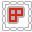

Select
Panel

Islands 
- Select Islands by selected edge/face of the Islands.
Int. Loop
- Inter seam loop. Select Edge Loop with respect to Seams.
Overlapped
- Select Overlapped Islands.
Flipped
- Select Flipped Islands.
Seam
- Select Edges Marked as Seams.
Sharp
- Select Edges Marked as Sharp.
Select UV Borders
- Select existing UV Borders.
Similar
- Select Islands similar to those selected.
Select Edges By Direction
- Select edges by direction along U or V axis.
Isolate Islands (Toggle)
- Isolate Islands (Toggle).